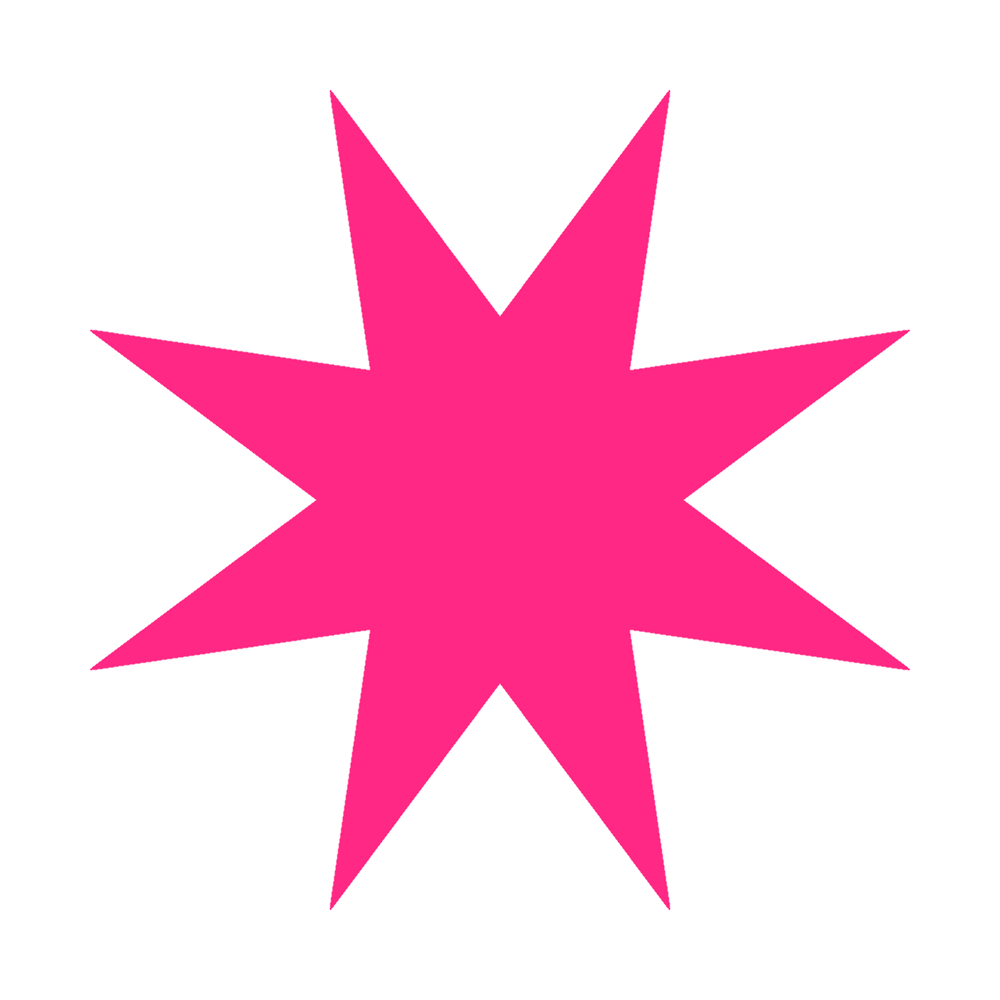

HBTI 검사
당신의 행복유형 찾기
학생인권부
검사하러가기
행복 MBTI 테스트
8가지 질문을 통해
내가 행복을 느끼는 방식을 알아봐요.
A / P
성취 ↔ 즐거움
M / D
순간 ↔ 지속
T / L
함께 ↔ 혼자
R / V
안정 ↔ 변화
테스트 시작
← 처음으로
질문 1 / 8
13%
행복의 성격 (A / P)
A 성향에 가까운 질문 삽입
그렇다
그렇지 않다
← 이전 질문
추가 질문 1
A / P
행복의 성격 (A / P)
A랑 P가 같을 때의 특수질문
A 유형
P 유형
✨
당신의 행복을
분석 중...
잠시만 기다려주세요!
AMTR
「행복 유형」
나의 행복 특징
나에게 잘 맞는 활동
다시 테스트하기
